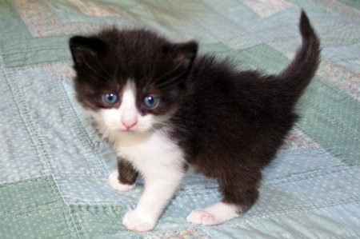
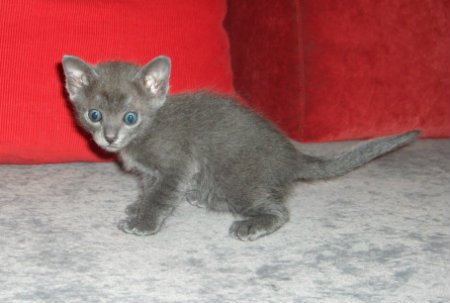
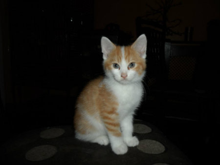
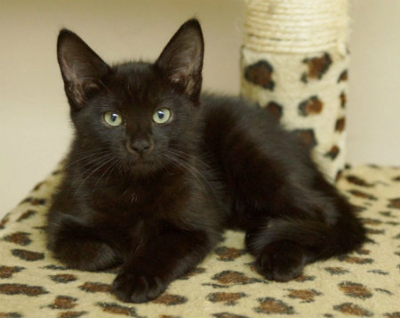
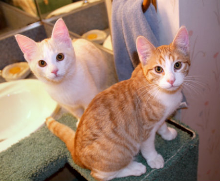

So...you found some kittens.
In order to best help you and the kittens, we first need to determine their age.
Click the radio buttons for pictures and descriptions of kitten age stages. Once you've determined the age of your kittens, click "Next Steps" for care instructions.
Newborn
Eyes are closed
Kittens can wiggle in place but cannot move around on their own
Kittens are completely dependent on mom to feed them, keep them warm, and help them eliminate
Next steps
Observe. Is mom around?
If you have determined that mom has abandoned them, gently put the kittens in a blanket-lined box or carrier and bring them inside
Keep them warm. A hot water bottle (but not too hot) wrapped in a towel works well
Bottle or syringe feed with KMR (kitten milk replacer). Do not give any type of milk other than KMR!
Visit the Alley Cat Allies guide for comprehensive information.
Two Weeks Old
Kittens' eyes are open
Kittens are starting to crawl
Their senses are starting to develop.
Kittens are still completely dependent on mom
Next Steps
Visit the Alley Cat Allies guide for comprehensive information.

Three to four weeks old
Kittens are steadier on their feet, and will run around and play
Kittens' eyes are still blue
They are starting to use the litterbox (if provided) and eliminate on their own
They are still getting most of their food from mom's milk, but begin to nibble on solid food
Next Steps
Visit the Alley Cat Allies guide for comprehensive information.

Five to six weeks old
Kittens' eyes have turned into their adult color -- usually green or yellow
Kittens are very active and learning to stalk, jump, and chase
Kittens may still be nursing but eating solid food as well
Next Steps
Visit the Alley Cat Allies guide for comprehensive information.

Seven to eight weeks old
Kittens are weaned, and spending less and less time with mom
Kittens are beginning to venture out on their own
Next Steps
Visit the Alley Cat Allies guide for comprehensive information.

Ten to twelve weeks old
Kittens look like miniature adults
They are old enough to be seperated from mom and littermates and find forever homes
Kittens are old enough to be spayed and neutered
Next Steps
Visit the Alley Cat Allies guide for comprehensive information.

Three to four months old
Kittens are completely self-sufficient
Adult teeth are beginning to come in
Next Steps
Visit the Alley Cat Allies guide for comprehensive information.